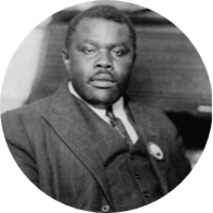

Marcus Mossiah Garvey
The man who devoted his life to the improvement of others

Marcus Garvey was a Jamaican political activist and the
founder of the Universal Negro Improvement Association
and African Communities League.
Here is an overview of Marcus Garvey's life:
-
Marcus Garvey's Early Years - Born in St.Ann's Bay, Jamaica to Marcus Mosiah Garvey Sr., a mason, and Sarah Jane Richards, a domestic worker and farmer.
-
Universal Negro Improvement Association - After two years in London—where he received an education that would likely have been unavailable to him in the Americas because of the color of his skin—Garvey returned to Jamaica. It was during this time that he started the Universal Negro Improvement Association.
Garvey also began corresponding with Booker T. Washington, the African American leader, author and activist who had been born into slavery. In 1916, Garvey boarded a ship bound for the United States, where—as a dramatic and invigorating public speaker—he intended to go on a lecture tour.
He ended up settling in New York City, where he first spoke at the famous St. Mark’s Church before embarking on a 38-city speaking tour. He also took on work in a print shop to make ends meet.
While in New York, he authored the “Declaration of Rights of the Negro Peoples of the World,” which was ratified at the convention of the Universal Negro Improvement Association at Madison Square Garden in 1920. It was during this meeting that Garvey was also elected “Provisional President” of Africa.
-
Black Star Line - Garvey established the first U.S. chapter of the Universal Negro Improvement Association in 1917 in Harlem, and began publishing the Negro World newspaper. Soon, his speaking engagements took on an angry tone, in which he questioned how the United States could call itself a democracy when across the country people of color were still oppressed.
By 1919, he and his associates set up the shipping company Black Star Line under the auspices of the Universal Negro Improvement Association, which by then had grown to include more than four million members.
Not long after the Black Star Line had purchased its first ship, the S.S. Yarmouth, and rechristened it the S.S. Frederick Douglass, the company began its “African Redemption” Liberia program, with the idea of establishing a nation on the west coast of Africa for African Americans, or those who were born into slavery or were the descendants of enslaved people.
-
Death of Marcus Garvey - In 1935, Garvey returned to London where he lived and worked until his death at age 52. Marcus Garvey died on June 10, 1940 from complications brought on by two strokes. Due to World War II travel restrictions, he was originally buried in St. Mary's Roman Catholic cemetery in Kensal Green, London. But on November 13, 1964, his body was exhumed and buried beneath the Marcus Garvey Memorial in National Heroes Park in Kingston, Jamaica.
-
Legacy of Marcus Garvey - While in London, Garvey continued to write and coordinated the establishment of the School of African Philosophy in Toronto to train future leaders of the Universal Negro Improvement Association. By then, the organization had more than a thousand chapters worldwide.
Although his legacy as a leader and activist lives on, Garvey’s separatist and Black Nationalist views were not embraced by many of his peers. In fact, W.E.B. Du Bois of the NAACP famously said, “Marcus Garvey is the most dangerous enemy of the Negro race in America and in the world.”
However, Garvey’s supporters prefer to focus on his key message, which was steeped in African American pride. After all, he is credited with coining the phrase “Black is beautiful.”
His philosophy is perhaps best exemplified in the following quote: “We must canonize our own saints, create our own martyrs, and elevate to positions of fame and honor Black men and women who have made their distinct contributions to our racial history … I am the equal of any white man; I want you to feel the same way.”